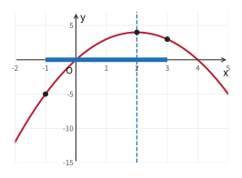
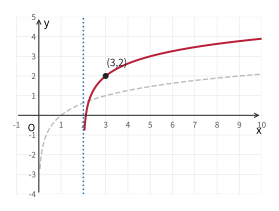

別冊章末問題の解答
1. 次の値を求めよ。 \[\left(\log_{3}2+\log_{9}2^{4}\right)\left(\log_{2}3+\log_{4}3^{4}\right)\]
底を \(3\) にそろえる（底の変換公式）
\(\log_c b=\dfrac{\log_a b}{\log_a c}\)。
\[\log_{9}2^{4}=\dfrac{\log_{3}2^{4}}{\log_{3}3^2}=\dfrac{4\log_{3}2}{2}=2\log_{3}2\]第1の括弧をまとめる
\[\log_{3}2+\log_{9}2^{4}=\log_{3}2+2\log_{3}2=3\log_{3}2\]第2の括弧をまとめる
同様に底を \(2\) にそろえる。
\[\log_{2}3+\log_{4}3^{4}=\log_{2}3+2\log_{2}3=3\log_{2}3\]積を計算する
\(\log_a b\cdot\log_b a=1\) を使う。
\[3\log_{3}2\cdot3\log_{2}3=3\cdot3\cdot1=9\]（例題1の型）
【答案】
\[9\]答
2. 方程式 \(\log_{5}x+\log_{5}(x - 4)=1\) を解け。
真数条件
真数は正：\(x>0\)、\(x - 4>0\)。共通部分は
\[x>4\]1つの対数にまとめる
\(\log_a M+\log_a N=\log_a MN\)、\(n=\log_a a^n\)。
\[\log_{5}\{(x)(x - 4)\}=1\ \Rightarrow\ (x)(x - 4)=5^{1}=5\]2次方程式を解く
\[x^{2} - 4 x - 5=0\]\[\left(x - 5\right) \left(x + 1\right)=0\ \Rightarrow\ x=-1,\ 5\]真数条件で選ぶ
\(x>4\) を満たすのは \(x=5\)。\(x=-1\) は真数条件に反するので解でない。
（例題2の型）
【答案】
\[x=5\]答
3. 不等式 \(\log_{2}(x + 3)+\log_{2}(x - 1)\geqq5\) を解け。
真数条件
\[x>1\]底に注意して不等式を作る
\(\log_{2}\{(x + 3)(x - 1)\}\geqq5\)。底 \(2\) は 1 より大きいので向きはそのまま。
\[(x + 3)(x - 1)\geqq2^{5}=32\]2次不等式を解く
\[x^{2} + 2 x - 35\geqq0\]\[\left(x - 5\right) \left(x + 7\right)\geqq0\]真数条件との共通部分をとる
2次不等式の解と \(x>1\) の共通部分：
\[x\geqq5\]（例題3の型）
【答案】
\[x\geqq5\]答
4. \(\dfrac{1}{3}\leqq x\leqq 27\) のとき、関数 \(y=\log_{3}x\cdot\log_{3}\dfrac{81}{x}\) の最大値・最小値と、そのときの \(x\) の値を求めよ。
\(t=\log_{3}x\) とおく
\(\log_{3}\dfrac{3^{4}}{x}=4-\log_{3}x=4-t\)。
\[y=t(4-t)\]\(t\) の範囲
\[\dfrac{1}{3}\leqq x\leqq 27\ \Rightarrow\ -1\leqq t\leqq 3\]（底 \(3\) は 1 より大きいので増加関数。）
平方完成して最大・最小
\[y=-t^2+4t=-\left(t-2\right)^2+4\]頂点 \(t=2\) は範囲内。
\[t=-1:\ y=-5,\quad t=3:\ y=3,\quad t=2:\ y=4\]\(y=-t^2+4t\) のグラフ（太線が \(-1\leqq t\leqq 3\) の範囲）。

答え（\(x\) に戻す）
最大値 \(4\)（\(x=9\)）、最小値 \(-5\)（\(x=\dfrac{1}{3}\)）。
（例題4の型）
【答案】
\[\text{最大値 }4\ (x=9),\quad \text{最小値 }-5\ (x=\dfrac{1}{3})\]答
5. 3つの数 \(P=\log_2 9,\ Q=\log_4 70,\ R=\dfrac{6}{2}\) を、小さい順に並べよ。
すべて底が \(2\) の対数にそろえる
\(\log_4 70=\dfrac{\log_2 70}{\log_2 4}=\dfrac12\log_2 70=\log_2\sqrt{70}\)、\(\dfrac{6}{2}=\log_2 2^{3}=\log_2\sqrt{64}\)。
\[P=\log_2 9,\quad Q=\log_2\sqrt{70},\quad R=\log_2\sqrt{64}\]真数を比べる（底 2 は 1 より大きい）
\(\log_2 X\) は増加関数なので、真数の大小がそのまま対数の大小。真数を2乗して比べる。
\[9^2=81,\quad \left(\sqrt{70}\right)^2=70,\quad \left(\sqrt{64}\right)^2=64\]大小を決める
\(64<70<81\) より
\[R<Q<P\]（例題5の型）
【答案】
\[R<Q<P\]答
6. \(\log_23=p\) とするとき、\(\log_{36}72\) を \(p\) で表せ。
底を2にそろえる
\(\log_{36}72=\dfrac{\log_272}{\log_236}\)。
素因数分解
\(72=2^{3}\cdot3^{2},\ 36=2^{2}\cdot3^{2}\)。
\[\log_272=2 p + 3,\qquad \log_236=2 p + 2\]答え
\[\log_{36}72=\dfrac{2 p + 3}{2 p + 2}\]（例題6の型）
【答案】
\[\dfrac{2 p + 3}{2 p + 2}\]答
7. \(y=\log_3 x\) のグラフを \(x\) 軸方向に \(2\)、\(y\) 軸方向に \(2\) だけ平行移動したグラフの方程式、漸近線、定義域を求めよ。
平行移動
\(y=\log_3 x\) を \(x\) 方向に \(2\)、\(y\) 方向に \(2\)。
\[y=\log_{3}(x-2)+2\]漸近線
漸近線は \(x=2\)。定義域は \(x>2\)。

通る点
\((1,0)\) は \((3,2)\) に移る。
（例題7の型）
【答案】
\[y=\log_{3}(x-2)+2,\ \ x=2,\ \ x>2\]答
8. 連立方程式 \(\log_2x+\log_2y=3,\ x-y=7\) を解け。
真数条件
\(x>0,\ y>0\)。
積にまとめる
\[\log_2x+\log_2y=\log_2xy=3\ \Rightarrow\ xy=8\]
連立
\[x-y=7,\quad xy=8\ \Rightarrow\ y(y+7)=8\]
\(y=1\)、\(x=8\)（\(y>0\)）。
（例題8の型）
【答案】
\[(x,y)=(8,1)\]答
9. 不等式 \(\log_2(x-1)+\log_2(x-4)<3\) を解け。
真数条件
\(x-1>0,\ x-4>0\) より \(x>4\)。
まとめて指数に
\[\log_2(x-1)(x-4)<3\ \Rightarrow\ (x-1)(x-4)<8\]
解く
\[x^{2} - 5 x - 4<0\ \Rightarrow\ - \dfrac{\sqrt{41}}{2} + \dfrac{5}{2}<x<\dfrac{5}{2} + \dfrac{\sqrt{41}}{2}\]
真数条件と合わせて
\[4<x<\dfrac{5}{2} + \dfrac{\sqrt{41}}{2}\]（例題9の型）
【答案】
\[4<x<\dfrac{5}{2} + \dfrac{\sqrt{41}}{2}\]答
10. \(x>0,\ y>0,\ x+y=12\) のとき、\(\log_2x+\log_2y\) の最大値を求めよ。
積の対数
\[\log_2x+\log_2y=\log_2xy\]
積の最大
\[x+y=12\ \Rightarrow\ xy\leqq\left(\dfrac{x+y}{2}\right)^2=36\]
等号は \(x=y=6\)。
最大値
\[\log_236=\log{\left(6^{\dfrac{2}{\log{\left(2 \right)}}} \right)}\]（例題10の型）
【答案】
\[\log{\left(6^{\dfrac{2}{\log{\left(2 \right)}}} \right)}\]答